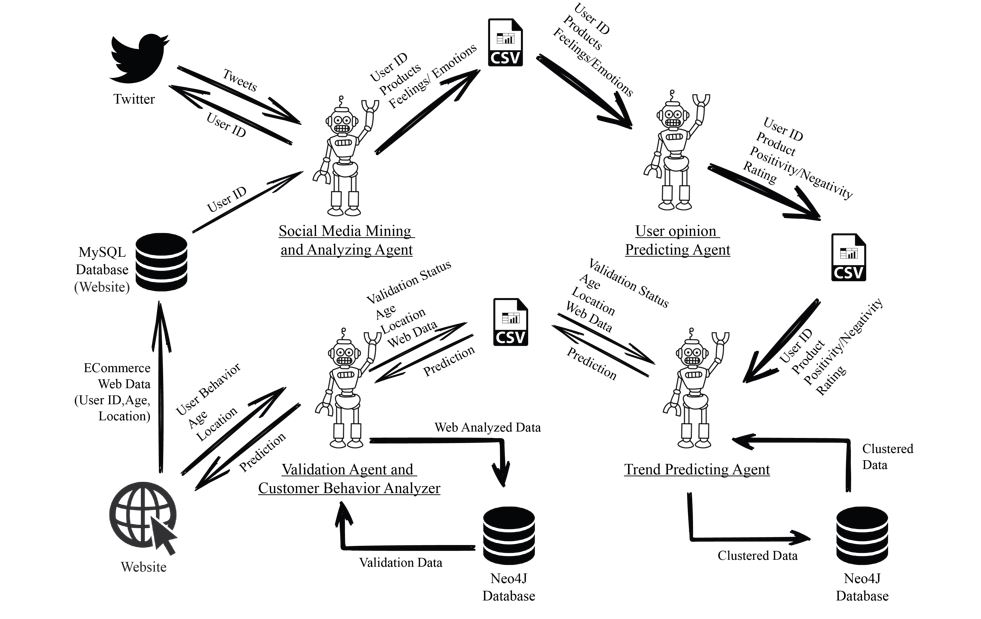

The system basic functionalities and its developments are elaborated in this phase. Designing under the proposed system is mainly focused on accuracy of the recommendation system. Since we use the agile SDLC model for develop the system, it will be easy to manage and make changes if there is any problem in the designing or if there is anything to change according to users.
This is the one of major parts of the iRecommender System which is analyzing the user’s feelings/emotions and extract the opinion as Positive, Negative or Neutral. These user feelings/emotions are extracted and stored in a csv file by the Social media mining and analyzing agent. These data will be input to the User Opinion predicting agent. Using Natural Language Processing (NLP) techniques, develop a User Opinion predicting Algorithm. This Algorithm will be output the Negativity, Positivity or Neutrality. As well as, rating of that opinion will also extract. These set of data store inside a csv file according to each user. Each user has different csv file.
The Trend Predicting Agent is a software system, which is developed to make hybrid recommendations for each customer on a given e-commerce platform. It is going to find out relationships between product to product and user to user using ALS algorithm and going to provide efficient, accurate, and quick personalized recommendations for each customer of the ecommerce platform according the found out tremendous insights from mentioned relationships. As feeds(inputs) for this system I used analyzed social media data and e commerce historical data.
Customer behavior analyzer is the component which tracks the user activities on the e commerce website. This component is triggered at the point of login of the customer and important data which are required for the iRecommender’s validation agent are collected through the actions performed by the user.
Validating Agent is the component of the iRecommender system which is responsible for the validation of the prediction done by Predicting agent. The validating agent tracks and analyses the user activities that were collected by the Customer Behavior Analyzer. The analyzed data are exposed to web mining techniques to validate the product suggestion done by the predicting agent.
Social media mining and analyzing Agent
This component is developed for collect each user’s tweets form the twitter and to do the data cleansing by removing the noise words in order to extract the user’s opinions about the products listered on a given ecommerce site.